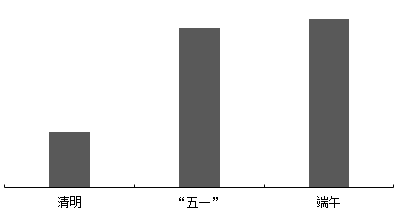

Xing Ce Work · 听课配套讲义
《资料分析：文字资料（提升进阶）核心错题》
2027公考行测 · 听课配套专属讲义 · 资料分析模块
导师寄语：听课三条纪律
- 严禁只记ABCD：每一道题必须在下方笔记区写明“特征识别”与“排错理由”，写不出理由算没做。
- 结合视频课程：听课时把老师的思维切入点、定位顺序和列式思路记录在笔记区，与自己的错因对照。
- 图片缺失不慌：若题干配图未显示，请查阅原题库 JSON 对应编号，或对照书籍原页码。
本讲义依据《三科易错板块与看课重点（2026-09-26）》优先板块生成，共收录 30 道核心错题；严禁在题面上直接抄写答案选项。
资料分析：文字资料（提升进阶）核心错题 · 共 30 题
【题目编号/题号】 ZL063 (132-2)书本第 131 132 页
【考点标签】 基期和差；文字资料
【材料】
2022年，全国共有260家银行机构和29家理财公司累计新发理财产品2.94万只，同比下降38.23%，降幅比上 年同期扩大7.22个百分点；累计募集资金89.62万亿元，同比减少32.57万亿元。 截至2022年底，全国共有278家银行机构和29家理财公司有存续的理财产品，共存续产品3.47万只，同比下 降4.41%；存续规模27.65万亿元，同比下降4.66%。分机构类型来看，理财公司存续产品13947只，存续规模 22.24万亿元，同比增长29.36%。银行机构中，城商行存续产品9064只，存续规模2.45万亿元，同比下降 32.34%；农村金融机构存续产品7808只，存续规模1.09万亿元，同比下降2.63%；股份制银行存续产品1208只， 存续规模0.88万亿元，同比下降82.99%；大型银行存续产品668只，存续规模0.92万亿元，同比下降49.26%；其 他机构存续产品1980只，存续规模0.07万亿元，同比下降13.42%。 截至2022年底，持有理财产品的投资者数量为9671.27万个，较年初增长18.96%，其中机构投资者数量为 95.95万个，数量占比同比提升了0.22个百分点；在持有理财产品的个人投资者中，数量最多的是风险偏好为二 级（稳健型）的投资者，占比35.44%。
【题干】
2021年银行机构存续的理财产品存续规模约为多少万亿元？
听课笔记 / 决策路径：
【题目编号/题号】 ZL064 (132-3)书本第 131 132 页
【考点标签】 现期平均数；文字资料
【材料】（材料同上，见本组上一题）
【题干】
2022年不同机构每只存续理财产品平均存续金额从大到小排前三名的是：
【选项】
A大型银行、理财公司、城商行
B理财公司、大型银行、城商行
C大型银行、理财公司、股份制银行
D理财公司、大型银行、股份制银行
听课笔记 / 决策路径：
【题目编号/题号】 ZL065 (132-4)书本第 131 132 页
【考点标签】 现期倍数；文字资料
【材料】（材料同上，见本组上一题）
【题干】
以存续规模计算市场份额，2022年理财公司存续理财产品的市场份额是2021年理财公司的多少倍？
听课笔记 / 决策路径：
【题目编号/题号】 ZL066 (132-5)书本第 131 132 页
【考点标签】 综合分析；文字资料
【材料】（材料同上，见本组上一题）
【选项】
A2021年持有理财产品的个人投资者数量占比为98.88%
B2022年新发理财产品中平均每只产品募集资金低于2021年
C2022年城商行存续产品存续金额在银行机构存续产品中比例为8.85%
D2022年持有理财产品的个人投资者中风险偏好为二级的数量约为3393万个
听课笔记 / 决策路径：
【题目编号/题号】 ZL067 (133-7)书本第 132 133 页
【考点标签】 基期倍数；文字资料
【材料】
哨点医院ILI%监测情况 本周哨点医院共报告流感样病例总数为5187例，比上周增加4.49%，比去年同期减少56.16%，其中国家级 哨点医院455例，比上周减少6.57%，比去年同期减少55.04%。城区哨点医院1899例，比上周减少19.40%，比去 年同期减少55.46%；郊区、县（市）哨点医院3288例，比上周增加26.07%，比去年同期减少56.55%。本周全市 哨点医院ILI%为5.98%，比上周低0.07个百分点，其中国家级哨点医院ILI%为2.12%，比上周高0.23个百分点。 城区哨点医院ILI%为4.45%，比上周低0.56个百分点；郊区、县（市）哨点医院ILI%为7.46%，比上周高0.01个 百分点。 （二）哨点医院ILI%纵向比较 2023年第14周全市哨点医院ILI%为5.98%，比2022年同期低7.56个百分点，比2021年同期低0.66个百分点， 其中国家级哨点医院ILI%为2.12%，比2022年同期低3.36个百分点，比2021年同期低4.67个百分点。城区哨点医 院ILI%为4.45%，比2022年同期低6.81个百分点，比2021年同期低2.08个百分点；郊区、县（市）哨点医院ILI% 为7.46%，比2022年同期低7.82个百分点，比2021年同期高0.54个百分点。 （三）各年龄组流感样病例构成情况 2023年第14周各年龄组报告的流感样病例构成情况为：0~4岁组1472例，5~14岁组1103例，15~24岁组406 例，25~59岁组1266例，60岁以上组940例。
【题干】
2023年第13周，H市郊区、县（市）哨点医院报告流感样病例约是城区的多少倍？
听课笔记 / 决策路径：
【题目编号/题号】 ZL068 (133-9)书本第 132 133 页
【考点标签】 基期比重；文字资料
【材料】（材料同上，见本组上一题）
【题干】
2022年第14周，H市哨点医院监测门诊就诊病人总数约多少例？
【选项】
A87000
B89000
C91000
D93000
听课笔记 / 决策路径：
【题目编号/题号】 ZL069 (133-10)书本第 132 133 134 页
【考点标签】 综合分析；文字资料
【材料】（材料同上，见本组上一题）
【选项】
A从2021年到2023年，H市第14周哨点医院ILI%逐年上升
B2023年第14周，H市哨点医院报告流感样病例同比减少超过6000例
C2023年第13周，H市国家级哨点医院报告流感样病例占全市比例超过10%
D2023年第14周H市哨点医院报告流感样病例中，占比低于20%的年龄组有3个
听课笔记 / 决策路径：
【题目编号/题号】 ZL070 (134-12)书本第 134 页
【考点标签】 现期比重计算；文字资料
【材料】
2019年A市专利密集型产业实现增加值6918.8亿元，比上年增长9.6%，分别高于战略性新兴产业、高技术 产业增加值增速2.3个和1.7个百分点；专利密集型产业增加值占GDP的比重为19.5%，比上年提高0.4个百分点。 2019年专利密集型产业发明专利申请量占专利申请总量的比重为66%，比规模以上重点企业高5.1个百分 点。专利密集型产业每亿元R&D经费产生的发明专利申请量为73.1件，比规模以上重点企业高3.6件；企业户均 拥有有效发明专利15.6件，是规模以上重点企业的2.2倍。从成果转化看，已被成功实施的发明专利数为5.2万 件，占有效发明专利数的58.4%。 在专利密集型产业中，2019年信息通信技术服务业实现营业收入10198.5亿元，增速达41.3%；实现利润 197.6亿元，比上年增长1倍；单位企业实现营业收入12亿元，是专利密集型产业平均水平的3.3倍。 在专利密集型产业中，2019年医药医疗产业营业收入、利润分别增长13.7%和5%；收入利润率达到17%， 高于专利密集型产业平均水平4.1个百分点；单位企业营业收入、利润分别为4.5亿元和0.76亿元。
【题干】
现已知2019年A市①专利密集型产业专利申请总量、②专利密集型产业R&D经费占专利密集型产业实现增加值的比重。如果想得到当年A市专利密集型产业发明专利申请量的数值，下列说法正确的是：
【选项】
A补充①可以得到，补充②不可以得到
B补充①不可以得到，补充②可以得到
C补充①和②中任一条可以得到
D①和②两条相加才可以得到
听课笔记 / 决策路径：
【题目编号/题号】 ZL071 (135-14)书本第 134 135 页
【考点标签】 现期平均数；文字资料
【材料】（材料同上，见本组上一题）
【题干】
在专利密集型产业中，2019年A市信息通信技术服务业单位企业实现利润额约为多少亿元？
听课笔记 / 决策路径：
【题目编号/题号】 ZL072 (135-15)书本第 134 135 页
【考点标签】 综合分析；文字资料
【材料】（材料同上，见本组上一题）
【题干】
关于A市专利密集型产业发展状况，能够从上述资料中推出的是：
【选项】
A2018年增加值占全市GDP比重为19.9%
B2019年发明专利申请量比非发明专利申请量高一倍以上
C2018年信息通信技术服务业实现利润超过100亿元
D2019年医药医疗产业利润占营业收入的比重低于上年水平
听课笔记 / 决策路径：
【题目编号/题号】 ZL073 (135-16)书本第 135 页
【考点标签】 间隔增长率；文字资料
【材料】
2021年，全国纺织品服装出口3155亿美元，同比增长8.4%。其中，纺织品出口1452.2亿美元，同比下降 5.6%，较2019年增长22.0%；服装出口1702.8亿美元，同比增长24.0%，较2019年增长16.0%。其中，针织服装 及衣着附件出口864.8亿美元，同比增长39.0%；梭织服装及衣着附件出口701.2亿美元，同比增长12.6%。 2021年，中国对美国、东盟、欧盟和日本的纺织品服装出口合计1724.9亿美元。其中，对美国出口额为 563.5亿美元，同比增长4.0%；向东盟十国出口纺织品服装491.2亿美元，同比增长24.9%；对欧盟27国出口纺织 品服装469.9亿美元，同比下降11.1%；对日本出口纺织品服装200.3亿美元，同比下降7.2%。 2021年，中国向全球出口纺织纱线138亿美元，出口织物667亿美元，分别同比增长41.5%和34.3%。纺织制 品当中，防疫类口罩出口额为129.5亿美元，出口金额、数量同比分别下降76.0%和13.0%。除防疫类口罩外，其 他纺织制品出口额为517.2亿美元，同比增长27.5%。 2021年，中国向“一带一路”沿线国家出口纺织品服装1137.9亿美元，同比增长24.5%，较2019年增长 17.3%；同时，中国自“一带一路”沿线国家进口纺织品服装131.6亿美元，同比增长24.5%。
【题干】
2020年，全国服装出口额比2019年：
【选项】
A增长了10%以上
B下降了10%以上
C增长了不到10%
D下降了不到10%
听课笔记 / 决策路径：
【题目编号/题号】 ZL074 (136-17)书本第 135 136 页
【考点标签】 现期比重；文字资料
【材料】（材料同上，见本组上一题）
【题干】
2021年，全国针织、梭织服装及衣着附件总出口额约占纺织品服装出口总额的：
听课笔记 / 决策路径：
【题目编号/题号】 ZL075 (136-19)书本第 135 136 页
【考点标签】 基期比重；文字资料
【材料】（材料同上，见本组上一题）
【题干】
2020年中国出口的纺织制品总额中，防疫类口罩出口额占比约为：
听课笔记 / 决策路径：
【题目编号/题号】 ZL076 (137-3)书本第 136 137 页
【考点标签】 现期倍数；文字资料
【材料】
2021年上半年，S市工业战略性新兴产业总产值7164.68亿元，比去年同期增长19.6%，两年平均增长 12.3%。其中，新能源汽车、新能源和高端装备产值同比分别增长2.5倍、32.1%和24.5%。 2021年上半年，全市第三产业增加值15080.35亿元，比去年同期增长11.3%。其中，信息传输、软件和信息 技术服务业增加值1770.06亿元，比去年同期增加245.5亿元；批发和零售业增加值2428.92亿元，同比增长 15.2%；金融业增加值3842.65亿元，比去年同期增加274.7亿元；房地产业增加值1812.18亿元，同比增长 13.6%。 2021年上半年，全市社会消费品零售总额9048.44亿元，比去年同期增加了2104.14亿元。分行业看，批发 和零售业零售额8287.13亿元，同比增长28.4%；住宿和餐饮业零售额761.31亿元，同比增长54.0%。2021年上半 年，全市网上商店零售额1485.72亿元，比去年同期增加259.92亿元。 2021年上半年，全市新建商品房销售面积832.83万平方米，比去年同期增长29.2%。其中，新建商品住宅销 售面积667.94万平方米，同比增长23.0%。
【题干】
2021年上半年，S市批发和零售业零售额同比增量约是住宿和餐饮业的多少倍？
听课笔记 / 决策路径：
【题目编号/题号】 ZL077 (138-10)书本第 137 138 页
【考点标签】 综合分析；文字资料
【材料】
2022年1~7月，全国规模以上工业发电4.77万亿千瓦时，同比增长1.4%，增速比上半年加快0.7个百分点。7 月份，全国发电量8059亿千瓦时，同比增长4.5%，增速比上月加快3.0个百分点。分品种看，7月份火电由降转 增，同比增长5.3%；由于来水偏枯，水电同比增长2.4%，增速比上月放缓26.6个百分点；风电同比增长5.7%， 增速比上月放缓11.0个百分点；核电同比下降3.3%，降幅比上月收窄5.7个百分点；太阳能发电同比增长 13.0%，增速比上月加快3.1个百分点。 2022年1~7月，全社会用电量累计49303亿千瓦时，同比增长3.4%。分产业看，第一产业用电量634亿千瓦 时，同比增长11.1%；第二产业用电量32552亿千瓦时，同比增长1.1%；第三产业用电量8531亿千瓦时，同比增 长4.6%；城乡居民生活用电量7586亿千瓦时，同比增长12.5%。7月份，全社会用电量8324亿千瓦时，同比增长 6.3%。分产业看，第一产业用电量121亿千瓦时，同比增长14.3%；第二产业用电量5132亿千瓦时，同比下降 0.1%；第三产业用电量1591亿千瓦时，同比增长11.5%；城乡居民生活用电量1480亿千瓦时，同比增长26.8%。
【选项】
A2022年7月全国太阳能发电增长量最大
B2022年6月全国核电发电量比5月份高
C2022年7月第二产业用电量高于上半年第二产业月均用电量
D2021年7月第一产业用电量低于2021年上半年第一产业月均用电量
听课笔记 / 决策路径：
【题目编号/题号】 ZL078 (139-14)书本第 138 139 页
【考点标签】 现期量计算；文字资料
【材料】
2016年全国女性就业人员占全社会就业人员的比重为43.1%，其中城镇单位女性就业人员6518万人，比 2010年增加1656万人。 2016年公有制企事业单位中女性专业技术人员1480万人，比2010年增加211万人，所占比重达47.8%，提高 2.8个百分点；其中女性高级专业技术人员161万人，比2010年增加59.3万人，所占比重38.3%，提高3个百分 点。 2016年企业董事会中女职工董事占职工董事的比重为39.9%，企业监事会中女职工监事占职工监事的比重 为40.1%，比2010年分别提高7.2和4.9个百分点；企业职工代表大会中女性代表比重为28.7%，略低于2010年0.3 个百分点。 2016年女性参加生育保险的人数达8020万人，比2010年增长49%。2016年，参加城镇职工基本医疗保险的 女性1.4亿人，比2011年增长21.5%；参加城镇居民基本医疗保险的女性1.9亿人，比2011年增长了1.5倍。 2016年全国参加城镇职工基本养老保险人数3.8亿人，其中女性1.8亿人，占比比2010年提高3个百分点； 2016年，参加城乡居民基本养老保险人数5.1亿人，其中女性超过1.7亿人。 2016年全国参加失业保险的人数超过1.8亿人，其中女性7551万人，分别比2010年增加4713万人和2402万 人，增长约35%和47%；参加工伤保险人数2.2亿人，其中女性8129万人，分别比2010年增加5728万人和2429万 人，增长约35%和43%。
【题干】
如2017年及以后年份同比增量保持不变，同比增量按照2011-2016年间同比增量的平均值计算，全国参加失业保险的女性将在哪年超过1.2亿人？
听课笔记 / 决策路径：
【题目编号/题号】 ZL079 (139-15)书本第 138 139 页
【考点标签】 综合分析；文字资料
【材料】（材料同上，见本组上一题）
【选项】
A2016年全国参加工伤保险的人中，女性占比低于2010年水平
B2010年全国参加城镇职工基本养老保险的人中，女性占比低于40%
C2010年女职工董事占职工董事的比重高于女职工监事占职工监事的比重
D2010年公有制企业事业单位中男性高级专业技术人员不到210万人
听课笔记 / 决策路径：
【题目编号/题号】 ZL080 (141-2)书本第 140 141 页
【考点标签】 简单计算；文字资料
【材料】
2020年，我国规模以上互联网和相关服务企业（以下简称互联网企业）业务收入12838亿元，同比增长 12.5%，增速低于上年同期8.9个百分点。 2020年，互联网企业实现营业利润1187亿元，同比增长13.2%，增速低于上年同期3.7个百分点；得益于成 本控制较好，营业成本仅增长2.4%，行业营业利润高出同期收入增速0.7个百分点。 2020年，互联网企业信息服务收入共7068亿元，同比增长11.5%，增速低于上年同期11.2个百分点。互联网 接入及相关服务收入447.5亿元，同比增长11.5%，增速低于上年同期20.8个百分点；互联网数据服务（包括云 服务、大数据服务等）收入199.8亿元，同比增长29.5%，增速较上年同期提高3.9个百分点。 2020年，东部地区互联网业务收入11227亿元，同比增长14.8%，增速较上年同期回落9个百分点，中部地 区互联网业务收入448.1亿元，同比增长3.4%，增速较上年同期回落53.1个百分点。西部地区互联网业务收入 497.2亿元，同比增长6.9%，增速较上年同期回落15.2个百分点。东北地区互联网业务收入47.1亿元，同比增长 9.1%。 2020年，互联网业务累计收入居前5名的广东（增长5.2%）、北京（增长21.5%）、上海（增长20.9%）、 浙江（增长24.4%）和江苏（增长8.0%）共完成互联网业务收入10706亿元，同比增长15.1%，增速超过全国平 均水平2.6个百分点，占全国（扣除跨地区企业）比重达87.6%，占比较上年同期提高0.8个百分点。
【题干】
2019年，互联网企业互联网接入及相关服务收入同比增速比同年信息服务收入同比增速：
【选项】
A高不到10个百分点
B高10个百分点以上
C低不到10个百分点
D低10个百分点以上
听课笔记 / 决策路径：
【题目编号/题号】 ZL081 (141-5)书本第 140 141 142 页
【考点标签】 综合分析；文字资料
【材料】（材料同上，见本组上一题）
【题干】
关于我国互联网企业业务状况，能够从上述资料中推出的有几条？ ①2019年实现利润超过1000亿元 ②2020年，互联网数据服务收入比2018年增长了不到70% ③2018年及2019年，中部地区互联网业务收入均低于西部地区
听课笔记 / 决策路径：
【题目编号/题号】 ZL082 (142-8)书本第 142 页
【考点标签】 基期比重；文字资料
【材料】
2019年上半年，我国服务进出口总额达到26124.6亿元，同比增长2.6%。其中，出口总额9333.7亿元，同比 增长9.0%；进口总额16790.8亿元，同比下降0.6%。服务进出口总额占对外贸易总额的比重达到15.1%，比2018 年全年高出0.5个百分点。 2019年全年，我国服务进出口总额54152.9亿元，同比增长2.8%。其中，出口总额19564.0亿元，同比增长 8.9%；进口总额34588.9亿元，同比减少0.4%。 2019年上半年，我国知识密集型服务进出口额8923.9亿元，同比增长9.4%，其中，知识密集型服务出口额 4674.1亿元，同比增长12.1%；进口额4249.8亿元，同比增长6.5%。从具体领域看，知识产权使用费出口同比增 长33.0%；电信、计算机和信息服务出口同比增长15.7%，进口同比增长19.6%；其他商业服务（含技术、专业 和管理咨询服务、研发成果转让费及委托研发等）出口同比增长10.4%；金融服务出口同比增长13.9%，进口同 比增长43.9%。 2019年全年，我国知识密集型服务进出口额18777.7亿元，同比增长10.8%，其中，知识密集型服务出口额 9916.8亿元，同比增长13.4%；进口额8860.9亿元，同比增长8.0%。从具体领域看，个人文化娱乐服务，电信、 计算机和信息服务，金融服务进出口总额分别同比增长19.4%、18.9%、18.7%。
【题干】
2018年，我国对外贸易总额约为多少万亿元？
听课笔记 / 决策路径：
【题目编号/题号】 ZL083 (145-17)书本第 144 145 页
【考点标签】 现期平均数；文字资料
【材料】
2022年，深圳全市绿化覆盖总面积达到101385.6公顷，比上年增长513.4公顷；其中建成区绿化覆盖面积 41457.5公顷，比上年增长345.2公顷；建成区绿化覆盖率43.09%，比上年增长0.09个百分点；全市绿地面积 98270.2公顷，比上年增长1.45%；其中建成区绿地面积36613.1公顷，比上年增长3.30%；建成区绿地率比上年 增长0.98个百分点；全市公园绿地面积22219.0公顷，比上年增长222.5公顷，按常住人口计算人均公园绿地面积 比上年增长1.13%。 2022年全市公园已达到1260个，公园总面积38209.9公顷，分别是2003年的8.6倍和5.6倍；全市公园中，有 自然公园37个，比上年增加4个；城市公园191个，比上年增加4个；社区公园1032个，比上年增加14个。三级 公园体系的建成，基本实现了市民出门500米可达社区公园，2公里可达城市综合圈，5公里可达自然公园的目 标。全市公园绿化活动场地服务半径覆盖的居住用地面积达到21018.2公顷，较上年增长280.8公顷，公园绿化 活动场地服务半径覆盖率达到90.87%，与上年持平。 2022年，全市绿道长度3119公里，比上年增长9.70%，增速较上年收窄5.78个百分点，万人拥有绿道长度 1.77公里，比上年增长9.94%；绿道密度（全市绿道长度与全市面积之比）1.56公里/平方公里，居广东省首位。 深圳市建成区绿化覆盖率、公园绿化活动场地服务半径覆盖率、万人拥有绿道长度3项指标已达到国家生态园 林城市标准。
【题干】
2022年，深圳市每万人拥有公园绿地面积约为（ ）公顷。
听课笔记 / 决策路径：
【题目编号/题号】 ZL084 (146-3)书本第 145 146 页
【考点标签】 基期平均数；文字资料
【材料】
2023年三季度，支付系统共处理支付业务3358.88亿笔，金额3151.37万亿元，同比分别增长12.59%和 6.97%。 三季度，人民银行清算总中心系统共处理支付业务54.79亿笔，金额2379.52万亿元，同比分别增长0.92%和 9.53%，其中，大额实时支付系统处理业务9518.17万笔，同比下降10.39%，金额2254.07万亿元，同比增长 9.72%；小额批量支付系统处理业务11.51亿笔，金额46.69万亿元，同比分别增长5.73%和10.03%；网上支付跨 行清算系统处理业务42.31亿笔，同比下降0.03%，金额74.66万亿元，同比增长5.38%；境内外币支付系统处理 业务134.46万笔，同比增长2.83%，金额5707.35亿美元，同比下降14.63%。 在其他支付系统中，银行行内业务系统三季度处理业务54.42亿笔，同比增长11.14%，金额539.56万亿元， 同比下降4.10%；银联跨行支付系统处理业务837.93亿笔，金额70.27万亿元，同比分别增长21.37%和8.70%；城 银清算支付清算系统处理业务1056.40万笔，金额9744.45亿元，同比分别增长34.61%和36.31%；农信银支付清 算系统处理业务7.41亿笔，金额7162.13亿元，同比分别下降39.98%和13.55%；人民币跨境支付系统处理业务 176.43万笔，金额33.42万亿元，同比分别增长43.23%和31.41%；网联清算平台处理业务2404.21亿笔，金额 126.92万亿元，同比分别增长10.42%和6.28%。
【题干】
2022年三季度，人民银行清算总中心系统境内外币支付系统处理业务日均处理金额在以下哪个范围内？
【选项】
A超过80亿美元
B70亿-80亿美元之间
C60亿-70亿美元之间
D不到60亿美元
听课笔记 / 决策路径：
【题目编号/题号】 ZL085 (146-4)书本第 145 146 页
【考点标签】 平均数的增长率；文字资料
【材料】（材料同上，见本组上一题）
【题干】
将其他支付系统中①银行行内业务系统、②银联跨行支付系统、③城银清算支付清算系统和④农信银支付清算系统按2023年三季度平均每笔业务金额同比增速从高到低排列，以下正确的是：
听课笔记 / 决策路径：
【题目编号/题号】 ZL086 (147-6)书本第 147 页
【考点标签】 现期平均数；文字资料
【材料】
2020年1-2月，我国境内投资者共对全球147个国家和地区的1733家境外企业进行了非金融类直接投资，累 计实现投资1078.6亿元人民币，同比增长1.8%。对外承包工程完成营业额1080亿元人民币，同比下降9.5%，新 签合同额2150.3亿元人民币，同比增长38.3%。对外劳务合作派出各类劳务人员3.9万人，同比减少2.9万人，2月 末在外各类劳务人员77.8万人。 2020年1-2月，我国对外投资合作主要呈现以下特点： 一是对“一带一路”投资合作增幅较大。2020年1-2月，我国企业对“一带一路”沿线的48个国家有新增 投资，合计27.2亿美元，同比增长18.3%。在“一带一路”沿线的59个国家新签对外承包工程合同额153.6亿美 元，同比增长25.6%，完成营业额91.4亿美元。 二是对外投资结构持续多元。2020年1-2月，对外投资主要流向租赁和商务服务业、批发和零售业、制造 业和采矿业等传统投资领域，占对境外企业非金融类直接投资的比重分别为40.8%、15.1%、11.3%和8.9%。其 中流向租赁和商务服务业的投资额同比增长43.2%，成为增速最高的领域。 三是对外承包工程新签大项目增多。2020年1-2月，对外承包工程新签合同额在5000万美元以上的项目有 115个，较去年同期增加29个，占新签合同总额的83.9%。
【题干】
2020年1-2月，我国境内投资者对每个当期内产生非金融类直接投资的境外企业的非金融类直接投资额均值约为多少亿元人民币？
听课笔记 / 决策路径：
【题目编号/题号】 ZL087 (147-7)书本第 147 页
【考点标签】 基期平均数；文字资料
【材料】（材料同上，见本组上一题）
【题干】
2019年1-2月，我国对外承包工程月均完成营业额比月均新签合同额：
【选项】
A高不到300亿元人民币
B高300亿元人民币以上
C低不到300亿元人民币
D低300亿元人民币以上
听课笔记 / 决策路径：
【题目编号/题号】 ZL088 (147-8)书本第 147 页
【考点标签】 两期比重；文字资料
【材料】（材料同上，见本组上一题）
【题干】
2020年1-2月，租赁和商务服务业对外投资额占对境外企业非金融类直接投资额的比重比上年同期约：
【选项】
A上升了3个百分点
B上升了12个百分点
C下降了3个百分点
D下降了12个百分点
听课笔记 / 决策路径：
【题目编号/题号】 ZL089 (147-9)书本第 147 148 页
【考点标签】 现期平均数计算；文字资料
【材料】（材料同上，见本组上一题）
【题干】
如2020年1-2月人民币与美元的汇率稳定为7元人民币兑换1美元，则同期对外承包工程新签合同额在5000万美元以上的项目的平均新签合同额在以下哪个范围内？
【选项】
A2亿美元以上
B1.5-2亿美元之间
C1-1.5亿美元之间
D0.5-1亿美元之间
听课笔记 / 决策路径：
【题目编号/题号】 ZL090 (148-10)书本第 147 148 页
【考点标签】 综合分析；文字资料
【材料】（材料同上，见本组上一题）
【选项】
A2019年1-2月，我国境内投资者对境外企业非金融类直接投资额高于对外承包工程完成营业额
B2019年1-2月，我国对外劳务合作月均派出各类劳务人员不到1万人
C2020年1-2月，我国企业有新增投资的“一带一路”沿线国家中，我国企业平均对每个国家的新增投资额超过0.6亿美元
D2020年1-2月，我国企业在“一带一路”沿线国家新签对外承包工程合同额同比增量超过30亿美元
听课笔记 / 决策路径：
【题目编号/题号】 ZL091 (149-14)书本第 148 149 页
【考点标签】 现期比重；混合平均；文字资料
【材料】
党的十八大以来，我国居民收入水平持续较快增长，消费水平稳步提高，消费结构优化升级，生活质量明 显提升，人民生活正阔步迈向全面小康。 2019年，全国居民人均可支配收入30733元，比2000年增长4.4倍。全国居民人均消费支出21559元，比2012 年增长78.9%，年均增长8.7%。其中，城镇居民人均消费支出28063元，比2012年增长64.0%；农村居民人均消 费支出13328元，比2012年增长99.9%。 2019年全国居民恩格尔系数（人均食品支出占人均消费支出的比重）为28.2%，比2000年下降14.0个百分 点。其中，城镇居民恩格尔系数为27.6%，农村居民恩格尔系数为30.0%，分别比2000年下降11.0和18.3个百分 点。 2019年，全国居民平均每百户拥有彩色电视机120.6台、洗衣机96.0台、电冰箱100.9台、空调115.6台、汽 车35.3辆。城镇居民人均住房建筑面积为39.8平方米，比2002年增长62.1%；农村居民人均住房建筑面积为48.9 平方米，比2000年增长97.2%。全国居民人均交通通信支出2862元，比2000年年均增长14.7%，占人均消费支出 的比重较2000年提高6.1个百分点。全国居民人均医疗保健支出1902元，比2000年年均增长13.4%，占人均消费 支出的比重较2000年提高2.9个百分点。
【题干】
2019年城镇居民人口占总人口的比重约为：
【选项】
A52.7%
B53.8%
C54.1%
D55.9%
听课笔记 / 决策路径：
【题目编号/题号】 ZL092 (150-20)书本第 149 150 页
【考点标签】 平均数与增长量比较；综合资料
【材料】
2025年清明假期3天，Y省接待游客2110.5万人次，同比增长6.4%；实现旅游收入107.8亿元，同比增长 8.7%。全省4A级及以上景区接待游客657.5万人次，同比增长7.4%；纳入监测的13家红色旅游经典景区接待游 客54.7万人次，同比增长5.1%。 2025年“五一”假期5天，Y省接待游客4608.2万人次，同比增长18.7%；实现旅游收入295亿元，同比增长 20.3%。全省4A级及以上景区接待游客1629.9万人次，同比增长14.3%；纳入监测的13家红色旅游经典景区接待 游客119.5万人次，同比增长12.0%。 2025年端午假期3天，Y省接待游客2321.0万人次，同比增长20.6%；实现旅游收入114.4亿元，同比增长 25.6%。全省4A级及以上景区接待游客726.1万人次，同比增长18.9%；纳入监测的13家红色旅游经典景区接待 游客54.4万人次，同比增长17.5%。
【题干】
以下柱状图反映了2025年清明假期、“五一”假期和端午假期，Y省接待游客哪一指标的变化情况（横轴位置表示数值为0）？

【选项】
A纳入监测的13家红色旅游经典景区日均接待游客数同比增量
B纳入监测的13家红色旅游经典景区日均接待游客数量
C4A级及以上景区日均接待游客数同比增量
D4A级及以上景区日均接待游客数量
听课笔记 / 决策路径：